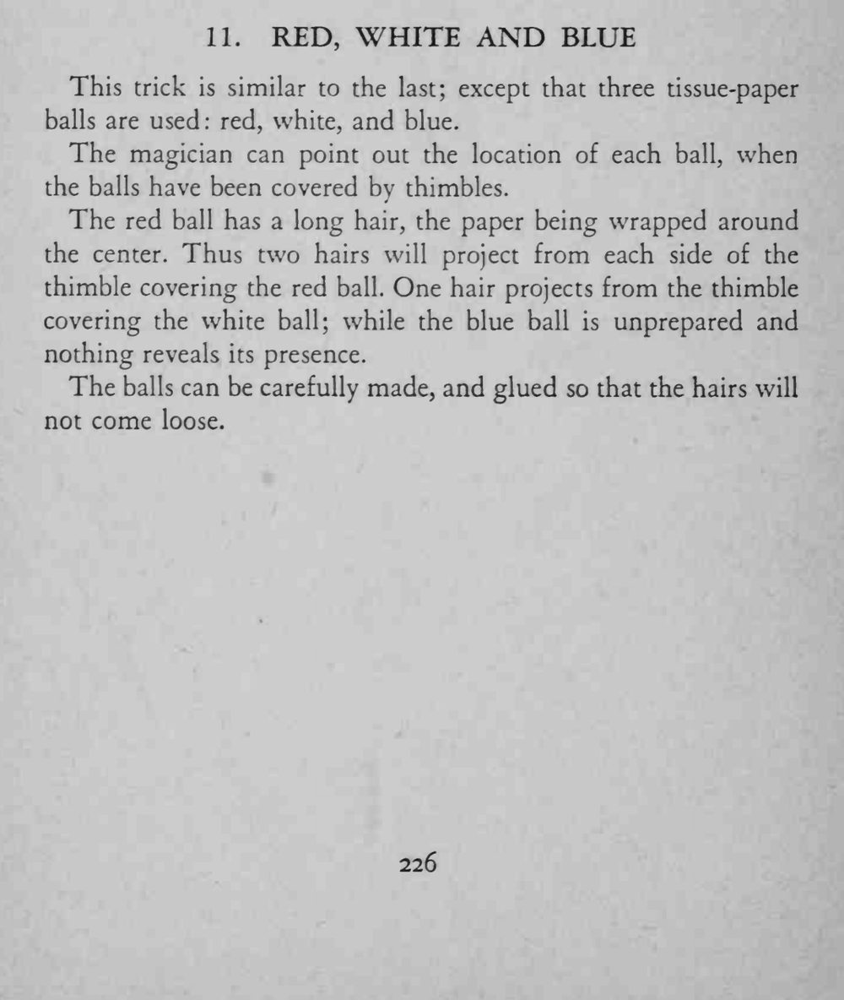
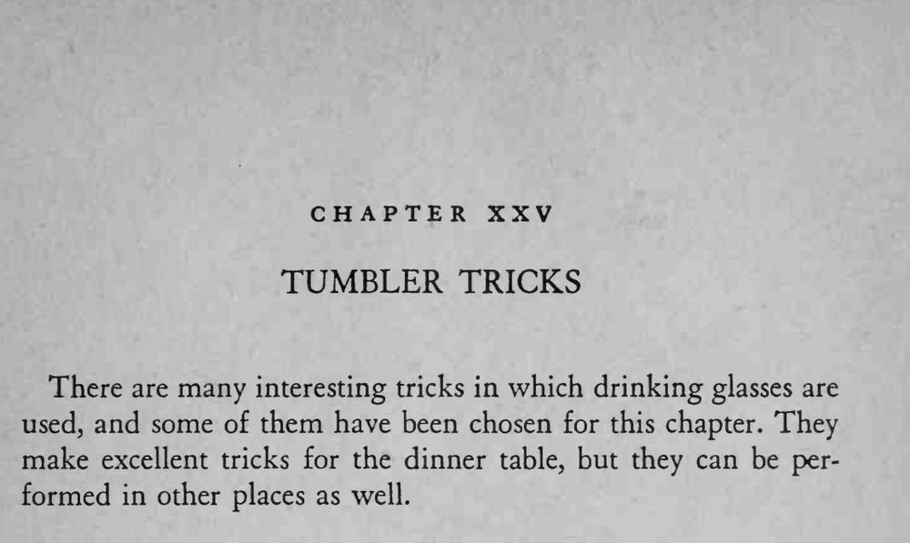

三只拇指套分别扣住红、白、蓝三个纸球并被打乱，魔术师却能一一指出每只球的位置。
头发要用胶粘牢、别在打乱时松脱，三根的长度差距要看得出来。


This trick is similar to the last; except that three tissue-paper balls are used red, white, and blue. The magician can point out the location of each ball, when the balls have been covered by thimbles. The red ball has a long hair, the paper being wrapped around the center. Thus two hairs will project from each side of the thimble covering the red ball. One hair projects from the thimble covering the white ball; while the blue ball is unprepared and nothing reveals its presence. The balls can be carefully made, and glued so that the hairs will not come loose. There are many interesting tricks in which drinking glasses are used, and some of them have been chosen for this chapter. They make excellent tricks for the dinner table, but they can be performed in other places as well.